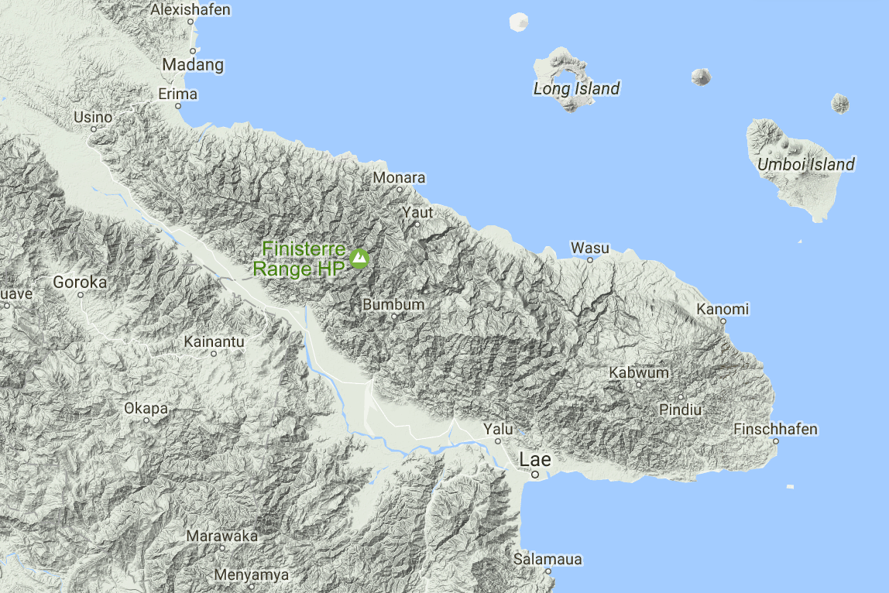

class: center, middle .title[Committee Meeting] .subtitle[] .author[Ethan Linck] .institution[University of Washington, Seattle] .date[June 5, 2017] .center[[{professional website}](https://elinck.github.io/)] .footnote[Created with [{Remark.js}](http://remarkjs.com/) using [{Markdown}](https://daringfireball.net/projects/markdown/) + [{MathJax}](https://www.mathjax.org/)] --- class: left ## Publications -- **Linck, E.**, Fricke, E., Rogers, H. In prep. Varied abundance and functional diversity in the surviving bird communities of the Mariana Islands. *The Wilson Journal of Ornithology.* **Linck, E.**, Huber, H., Greeney, H., Sheldon, K. In review. Nesting biology of the Blue-and-white Swallow *(Notiochelidon cyanoleuca)* in northeastern Ecuador. *Ornitologia Neotropical.* -- Battey, C.J., **Linck, E.**, Epperly, K.L., French, C., Slager, D., Klicka, J. 2017. A Migratory Divide In The Painted Bunting (*Passerina ciris*). *bioRxiv*. DOI: [10.1101/132910](https://doi.org/10.1101/132910) **Linck, E.**, Hanna, Zachary R., Sellas, A., Dumbacher, J.P. 2017. Evaluating hybridization capture with RAD probes as a tool for museum genomics with historical bird specimens. *Ecology and Evolution* 7(10). DOI: [10.1002/ece3.3065](https://doi.org/10.1002/ece3.3065) -- **Linck, E.**, Bridge, E.S., Duckles, J., Navarro-Sigenza, A.G., Rohwer, S. 2016. Assessing migration patterns in Painted Buntings using the world's bird collections as an aggregated resource. *PeerJ* 4:e1871. DOI: [10.7717/peerj.1871](https://doi.org/10.7717/peerj.1871) **Linck, E.**, Schaack, S., Dumbacher, J. 2015. Genetic differentiation within a widespread "supertramp" taxon: molecular phylogenetics of the Louisiade White-eye (*Zosterops griseotinctus*). *Molecular Phylogenetics and Evolution* 94(A), 113-121. DOI: [10.1016/j.ympev.2015.08.018](https://doi.org/10.1016/j.ympev.2015.08.018) **Linck, E.**. 2010. Notes on birds and logistics from the south side of Mount Giluwe, SHP. *Muruk* 10(1), 4-7. --- class: left ## Presentations -- **Linck, E.** 2017. Phenotype, species limits, and adaptation in a New Guinea kingfisher. Graduate Student Symposium, UW Biology, Seattle, WA. **Linck, E.** 2017. Natural history museums, DNA, and avian evolution. Trilogy Bird Club, Redmond, WA. **Linck, E.** 2017. Natural history museums, DNA, and avian evolution. Eastside Audubon Society, Kirkland, WA. **Linck, E.**, Bridge, E.S., Duckles, J., Navarro-Sigenza, A.G., Rohwer, S. 2016. Assessing migratory behavior in Painted Buntings with specimen collections and remote sensing data. Rocky Mountain Biology Laboratory Graduate Student Talks, Gothic, CO. **Linck, E.**, Sellas, A., Hanna, Z., Dumbacher, J. 2016. hyRAD, museum genomics, and the phylogeography of a New Guinea forest kingfisher. Evolution Meetings, Austin, TX. **Linck, E.**, Klicka, J., Zarza, E., Bryson Jr., R., McCormack, J. 2016. Phylogenomic phylogeography of the Rufous-capped Brush Finch. Graduate Student Symposium, UW Biology, Seattle, WA. -- Urquhart, G.R., Maes, J.M., **Linck, E.** 2015. Critical Uncertainties and Gaps in the Environmental and Social-Impact Assessment of the Proposed Interoceanic Canal through Nicaragua: Terrestrial Biodiversity. Second International Workshop on the Interoceanic Canal through Nicaragua, Managua, Nicaragua. **Linck, E.** 2015. Guest Lecture: Island Biogeography. Biology 472: Community Ecology, UW Biology, Seattle, WA. --- class: left ## Grants & Awards -- **National Geographic Committee on Research and Exploration.** In review. $26,050. -- **NSF Doctoral Dissertation Improvement Grant.** 2017. $20,084. **NDSEG Fellowship.** 2016. $172,000. **NSF GRFP Honorable Mention.** 2016. **WRF-Hall Fellowship.** 2016. $13,000. **WRF-Hall Supplemental Funds.** 2016. $5,100. -- **NSF GRFP Honorable Mention.** 2015. **AOU Student Membership Award.** 2015. $25. **Society of Systematic Biologists Graduate Student Research Award.** 2015. $1,500 **Reed College BURP Fund.** 2012. $1,500. **Reed College Arch and Fran Diack Student Field Research Fund.** 2010. $4,200. **Explorers Club Youth Activity Fund.** 2009. $1,500. --- class: left ## Popular writing on science and nature -- [Bird and Mammal Collections Threatened at the Smithsonian](http://www.slate.com/). 2017. *Slate?.* [The Evolution of Beauty (book review)](https://lareviewofbooks.org). 2017. *The Los Angeles Review of Books.* [Spring Peepers.](http://orionmagazine.org/) 2017. *Orion.* -- [Keep it Public.](https://www.jacobinmag.com/2017/04/jason-chaffetz-national-parks-bundy-land-management/) 2017. *Jacobin Magazine.* [How Trump's War on Science Might Hurt the University of Washington.](http://www.thestranger.com/slog/2017/01/27/24829608/how-trumps-war-on-science-might-hurt-the-university-of-washington) 2017. *The Stranger.* [British Scientists Wanted No Exit From the EU.](http://www.thestranger.com/slog/2016/06/24/24257994/british-scientists-wanted-no-exit-from-the-eu) 2016. *The Stranger.* [Science News (weekly column).](http://www.thestranger.com/authors/23759410/ethan-linck) 2016. *The Stranger.* [Wilderness and "A Third-World Critique" in the Era of Climate Change.](http://www.hypocritereader.com/69/title) 2016. *The Hypocrite Reader* 69. -- [Birds, Whiskey, and the Modern Evolutionary Synthesis: Ernst Mayr in the Solomon Islands.](http://www.hypocritereader.com/59/mayr) 2015. *The Hypocrite Reader* 59. [A Trail Runner Defends His Right to Public Lands.](http://www.hcn.org/articles/anger-against-trail-runners-public-lands-Mt-Rainier-Wonderland-Grand-Canyon-response) 2015. *High Country News.* [El Oso Plateado.](http://hypocritereader.com/39/el-oso-plateado) 2014. *The Hypocrite Reader* 39. [The Enduring Appeal of Counting Birds.](http://hypocritereader.com/33/counting-birds) 2013. *The Hypocrite Reader* 33. [On Singing.](http://hypocritereader.com/31/on-singing) 2013. *The Hypocrite Reader* 31. --- class: left ## Outreach and service -- **Natural History Museum Collections** - Preparation scientific bird specimens for the Burke Museum collections - Participation in the Burke Museums collecting expeditions (2015, 2017) - Occasional guide for UW Introductory Biology field trips to the Burke Museum specimen collections - Help run the Burke Museums Members' Night and Birds at the Burke outreach events (2014, 2015, 2016, 2017) -- **Departmental Service** - Organized a graduate student seminar on phylogenetics (Autumn 2015) - Host and chaperone for prospective graduate students -- **Contributions to the field** - Contributing writer, [*The Molecular Ecologist*](http://www.molecularecologist.com/), a field-specific news, literature and methods tutorial website - Manuscript referee, *Molecular Phylogenetics and Evolution*, *PeerJ*, *Axios Review*, *Ecological Applications*, *PLoS ONE* - Scripts publicly available on [GitHub](http://github.com/elinck) - Sequence data publicly available on GenBank / Dryad --- class: left ## Dissertation update: *Syma* project -- -- - hyRAD paper generated data from 20 individuals of lowland species S. torotoro, shows limitations of method - Loans approved for 40 other toepads and fresh tissues to complete comprehensive sampling - will use synthetic probe set based on hyRAD results and MyBaits services - Have begun analysis of song and morphology in both species --- class: left ## Dissertation update: Mt. Missim project -- -- - Resubmitted previously funded but unused NGS grant w/ collaborator Jack Dumbacher - Comprehensive resurvey of avian elevational range data from Bruce Beehler's 1975 dissertation work - Would shift focus to changes in community assembly processes --- class: left ## Dissertation update: Fall field work --  -- - Have organized permission to work at two established research sites with 3000+ meter elevational gradients - Will collect blood (in RNAl8r), some specimens from *Syma* and 10 other elevational series - Will ensure fieldwork produces useful data for thesis even if no kingfishers are caught: 1) comparison of divergence in taxon pairs across Ramu Valley; 2) adaptations to hypoxia (haemoglobin, transcript abundance) --- class: left ## Dissertation structure (NGS funding) -- **Chapter 1:** Speciation and elevation in *Syma* kingfishers. Target: *PNAS* -- **Chapter 2:** Comparative phylogeography of montane birds across the Ramu River Valley. Target: *Molecular Ecology* -- **Chapter 3:** Adaptation to altitude in elevational series. Target: *Evolution* -- **Chapter 4:** Climate change and community assembly in New Guinea's mountain birds. Target: *Ecology Letters* <img style="width:15%" src="../figures/mountains.jpg"> -- --- class: left ## Dissertation structure (no NGS funding) -- **Chapter 1:** Speciation and elevation in *Syma* kingfishers. Target: *PNAS* -- **Chapter 2:** Comparative phylogeography of montane birds across the Ramu River Valley. Target: *Molecular Ecology* -- **Chapter 3:** Adaptation to altitude in elevational series. Target: *Evolution* -- --- class: left ## Proposed timeline (NGS funding) -- **June 2017**: Burke collecting trip (?), Evolution meetings in Portland, extractions **July - August 2017**: Complete *Atlapetes pileatus*, possibly *Regulus* side projects, hear back from NGS **September - December 2017**: Field work on YUS and Mt. Wilhelm transects -- **January - June 2018** Lab, analysis, writing, submission of Chapter 1 + 2 **July - August 2018** Mt. Missim field season 1 **September - December 2018** Lab, analysis, writing, submission of Chapter 3 -- **January - February 2019** Mt. Missim field season 2 **March - September 2019** Analysis, writing, submission of Chapter 4 **October - December 2019** Defense, teaching --- class: left ## Proposed timeline (no NGS funding) -- **June 2017**: Burke collecting trip (?), Evolution meetings in Portland, extractions **July - August 2017**: Complete *Atlapetes pileatus*, possibly *Regulus* side projects, hear back from NGS **September - December 2017**: Field work on YUS and Mt. Wilhelm transects -- **January - May 2018** Analysis, writing, submission of Chapter 1 **June - September 2018** Burke collecting trip, Evolution meetings / NAOC meetings, lab work on blood and RNA samples, sequencing ** October - December 2018** Analysis, writing, submission of Chapter 2 -- **January - April 2019** Analysis, writing, submission of Chapter 3 **May 2019** Defense --